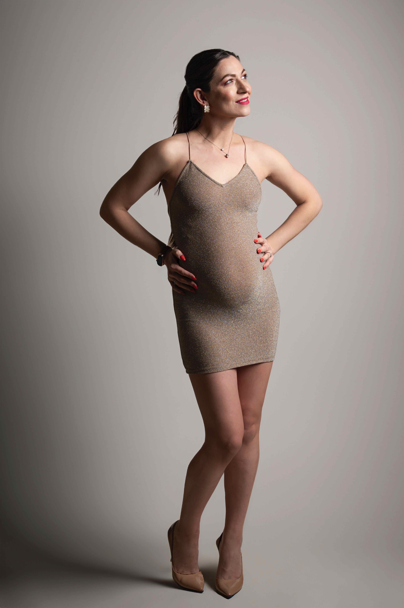
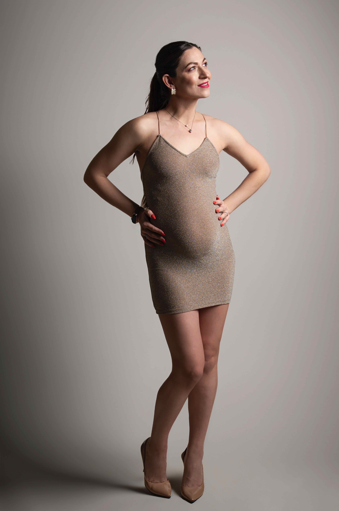
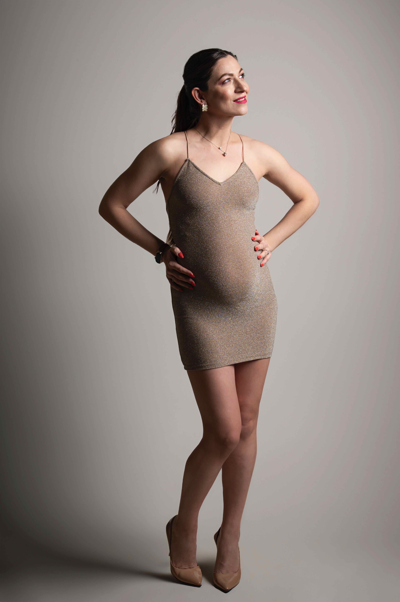

Portfolio Grossesse / Naissance
Découvrez une sélection de photos de grossesse et de naissance réalisées à Agen : moments de tendresse, lumière naturelle, émotions et souvenirs inoubliables.


 



Découvrez une sélection de photos de grossesse et de naissance réalisées à Agen : moments de tendresse, lumière naturelle, émotions et souvenirs inoubliables.
